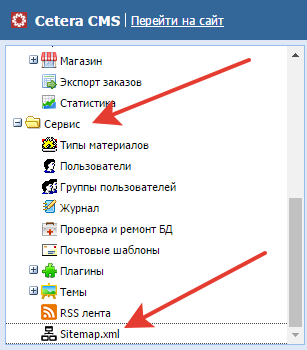
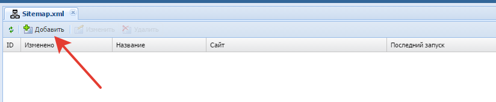
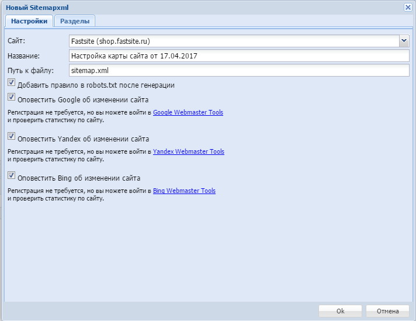
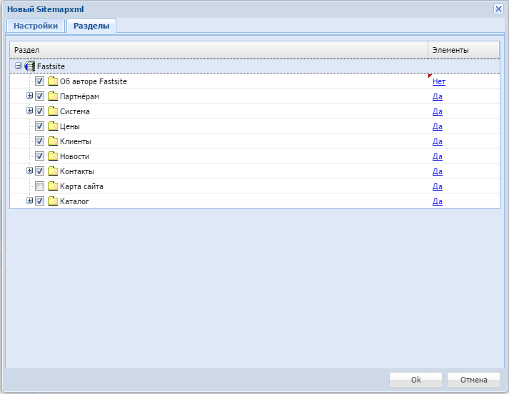
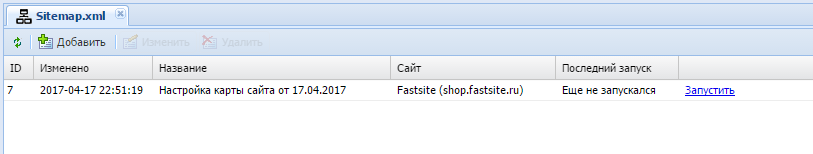
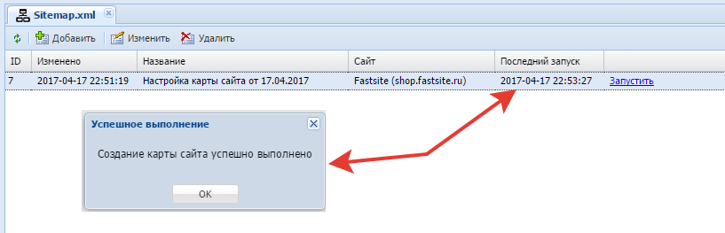
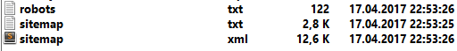
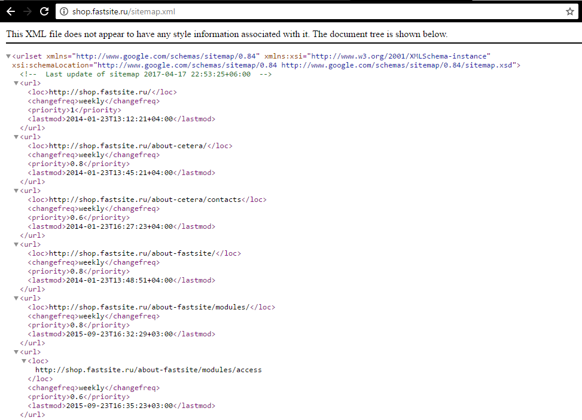

Переходим к разделу «Sitemap.xml»

Добавляем новую настройку для sitemap.xml

Попадаем на первую вкладку «Настройки»

В поле «Сайт» выбирается сайт, для которого необходимо создать sitemap.xml файл.
В поле «Название» может быть любой текст, удобный именно вам, используется в списке ваших файлов для различных сайтов.
В поле «Путь к файлу» задается путь относительно корня сайта, где будет сохранен файл.
Для добавления ссылки на файл в robots.txt вы можете отметить галочку «Добавить правило в robots.txt после генерации». Если ссылка на файл уже создана и новые настройки совпадают с ней, дублирования не произойдёт, поэтому данная галочка может быть выбрана.
Для оповещения поисковых систем об изменениях на сайте вы можете отметить галочки «Оповестить Google об изменении сайта», «Оповестить Yandex об изменении сайта», «Оповестить Bing об изменении сайта».
Переходим на вкладку «Разделы»

На вкладке показаны все разделы, привязанные к сайту. Вы можете настроить данные из каких разделов должны попадать в индексацию.
Столбец «Раздел» даёт возможность выбрать нужные для индексирования разделы.
Столбец «Элементы» - "Да" говорит системе, что нужно индексировать все элементы, входящие в данный раздел.

После сохранения мы перешли в список, в котором видно, что настройки сохранены, но мы ни разу не запускали генерацию файлов. Запускаем нажимая - "Запустить"

Генерация закончена, и мы можем увидеть созданные файлы

Откроем файл, в котором содержатся данные

Мы видим ссылки на индексирования конкретных страниц, все сработало замечательно.